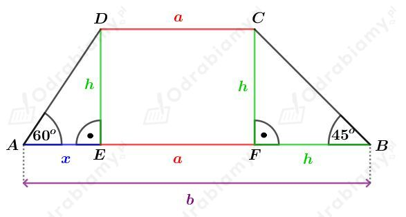
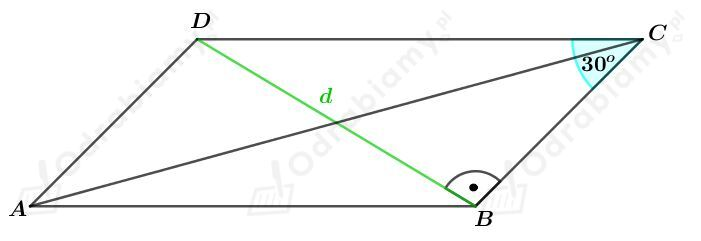
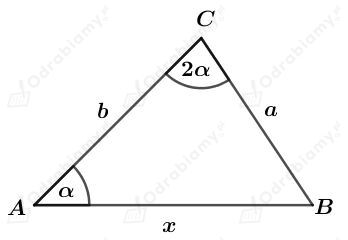
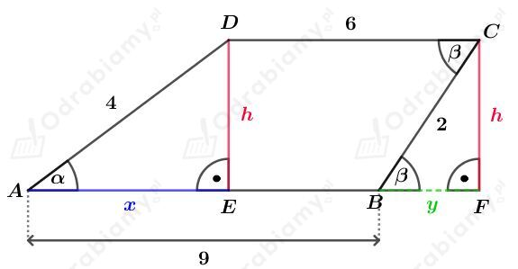
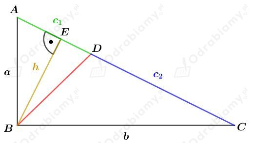
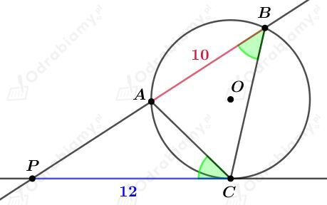

Rysunek:

Z treści zadania wiemy, że
Korzystając ze wzoru skróconego mnożenia na różnicę kwadratów mamy:
Rozważmy trójkąt AED. Korzystając z funkcji tangens dla kąta 𝛼 mamy:
Zauważmy, że
czyli
więc
Obliczmy pole tego trapezu. Mamy:
Rysunek:

Rozważmy trójkąt prostokątny BCD. Korzystając ze związku między długościami boków w trójkącie o kątach 30o, 60o, 90o mamy:
oraz
Korzystając z twierdzenia cosinusów dla trójkąta ABC mamy:
Korzystając ze wzorów redukcyjnych mamy:
Rysunek:

Uzasadnimy, że
Korzystając z twierdzenia sinusów otrzymujemy:
Korzystając ze wzoru na sinus podwojonego kąta mamy:
Korzystając z twierdzenia cosinusów otrzymujemy:
czyli
Rysunek:

Zauważmy, że
Korzystając z twierdzenia Pitagorasa dla trójkąta AED mamy:
Korzystając z twierdzenia Pitagorasa dla trójkąta BFC mamy:
Wyznaczmy cosinusy kątów ostrych tego trapezu. Mamy:
oraz
W trapezie, suma miar kątów przy jego ramieniu wynosi 180o. Wyznaczmy cosinusy kątów rozwartych tego trapezu:
Odp. Cosinusy kątów tego trapezu wynoszą -7/8, -1/4, 1/4, 7/8.
Dane są trójkąty ABC i A'B'C', których rysunek przedstawiono w podręczniku.
Pole trójkąta ABC jest równe S.
Wykażemy, że pole trójkąta A'B'C' jest równe 7S.
Punkty C i A' są symetryczne względem punktu A, punkty A i B' - względem punktu B, a punkty B i C' - względem punktu C. Zatem
a stąd mamy również
Wprowadźmy oznaczenia:
Wyznaczmy pole trójkąta BB'C'. Mamy:
Wyznaczmy pole trójkąta A'B'A. Mamy:
Wyznaczmy pole trójkąta A'CC'. Mamy:
Wyznaczmy pole trójkąta A'B'C'. Mamy:
Wykazaliśmy, że pole trójkąta A'B'C' wynosi 7S.
Rysunek :

Niech |AC|=c oraz |AE|=k.
Z treści zadania wiemy, że
zatem
Korzystając z twierdzenia o dwusiecznej kąta w trójkącie mamy:
Korzystając z twierdzenia Pitagorasa dla trójkąta ABC mamy:
czyli
Pole trójkąta ABC możemy zapisać jako:
oraz
Porównując otrzymane pola mamy:
Korzystając z twierdzenia Pitagorasa dla trójkąta ABE mamy:
Wyznaczmy stosunek, w jakim wysokość poprowadzona z wierzchołka kąta prostego dzieli przeciwprostokątną. Mamy:
Odp. Wysokość poprowadzona z wierzchołka kąta prostego dzieli przeciwprostokątną w stosunku 4:9.
Rysunek:

Korzystając z twierdzenia o kącie między styczną a cięciwą wiemy, że
Kąt APC jest kątem wspólnym dla trójkątów PCA i PBC.
Zatem na mocy cechy podobieństwa KKK wiemy, że trójkąty PCA i PBC są trójkątami podobnymi.
Korzystając z podobieństwa trójkątów PCA i PBC otrzymujemy:
czyli
więc
Odp. |PA|=8 oraz |PB|=18.
Dane są trójkąty ACP i BDP oraz okrąg o środku w punkcie O przedstawione na rysunku w podręczniku.
Kąty APC i DPB są kątami wierzchołkowymi, więc
Kąty CDB i CAB są kątami wpisanymi opartymi na tym samym łuku, więc
Kąty ACP i ABD są kątami wpisanymi opartymi na tym samym łuku, więc
Zatem korzystając z cechy podobieństwa trójkątów KKK, trójkąty ACP i BDP są podobne.
Korzystając z podobieństwa tych trójkątów mamy:
czyli
Z treści zadania wiemy, że:
Korzystając z wyznaczonej własności
mamy:
Zauważmy, że dany okręg to okręg opisany na trójkącie CBD. Niech R będzie długością promienia tego okręgu.
Korzystając z twierdzenia sinusów dla trójkąta CBD mamy: